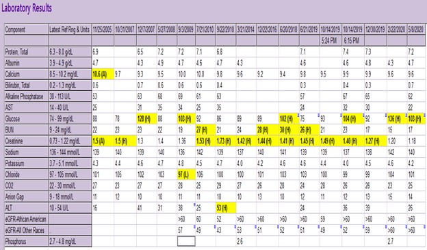
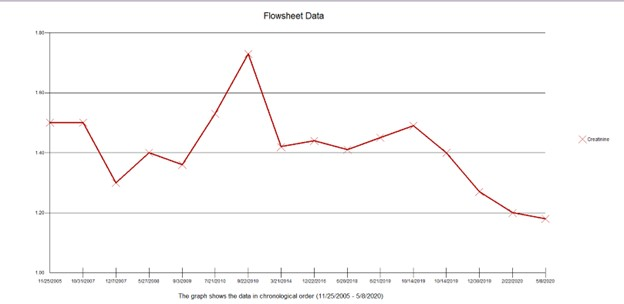

Plant-Based Dietary Approach in the Management of Third Stage Chronic Kidney Diseases
This clinical case study outlines the plant-based therapy plan for a 55-year-old man with a clinical diagnosis of Chronic Kidney Disease
Chronic kidney disease is associated with increasing age, diabetes, cardiovascular diseases, and drug use. In Norway, USA and Australia, large scale screening programs undertaken in the 2000s indicated that more than 10% of the adult population have markers for chronic kidney disease [coresh2003?,chadban2003?,hallan2006?]. By 2030, the number of people on renal replacement therapy is expected to reach 5.4 million. About 2.3 – 7.1 1 million adults have reportedly died prematurely from lack of access to renal replacement therapy services3.
In a bid to properly check the prevalence and mortality rate of CKD, different national and international agencies have adopted strategies aimed at reducing the global burden of CKD. NSAIDs are commonly used in the general population for the control of pain associated with inflammation and migraine. This clinical case study describes a 55-year-old man with a confirmed diagnosis of CKD. He was prescribed an NSAID to manage his cluster headache. However, long term use of this NSAID worsened the CKD. His CKD resolved completely with dietary intervention and he subsequently halted the use of the NSAID.
Case Introdudction
Chronic kidney disease describes long-tern loss of the kidney functions. It is generally characterized by kidney damage, abnormal albumin excretion and decreased kidney functioning persisting for more than three months. Therapy plans for CKD are comprehensive and require a systematic monitoring of Kidney function.
In 2002, the Kidney Disease Outcomes Initiative (KDOQI) of the National Kidney Foundation defied the decreased kidney function in CKD as that of a glomerular filtration rate less tan 60mL/min/1.73m22. Reduction in the glomerular filtration rate is linked to the loss of functional nephrons and the reduction in renal mass. The most commonly documented complications associated with CKD include anemia, renal ostedystrophy, left ventricular hypertrophy and congestive heart failure.
The KDOQI guidelines classified CKD progression into five different stages for informed patient management. Patients at stages 1 (normal eGFR>= 60 mL/min/1.73m2 with persistent albuminuria), stage 2 (eGFR between 60-89 mL/min/1.73m2) and stage 3 (eGFR between 30-59 mL/min/1.73m2) are generally asymptomatic. At stage 4 (eGFR between 15-29 mL/min/1.73m2) and stage 5 (eGFR <15mL/min/1.73m2 w), patients experience symptoms suggesting metabolic acidosis, electrolyte imbalance and endocrine derangements.
In suspected cases, establishing a confirmed diagnosis for CKD involves conducting laboratory studies that directly measures kidney functioning. These includes serum albumin levels tests, lipid profile, urinalysis basic metabolic profile and complete blood count.
Clinical reviews and studies have implicated NSAIDs in the onset and progression of CKD. No steroidal anti-inflammatory drugs are commonly prescribed for analgesic and anti-inflammatory effects in people with CKD. In the general adult population of the U.S., one in fifteen adults are actively medicating on NSAIDs. This class of drugs can limit renal blood flow, induce cytotoxicity, limits cell-mediated immune injury response and cause tubular obstruction through crystal formation and deposition.
These adverse drug effects of NSAIDs have been linked with the onset of CKD in healthy patients. Dietary interventions are becoming popular as supplementary or alternate therapy in the management of CKD. A low protein diet has been shown to improve the symptoms of CKD and also noticeably improve kidney functioning.
Clinical Case Study
The patient is a 55-year-old man who presented to a Secondary Health Care Facility on account of Gastroesophageal Reflux Disease (GERD) and Chronic Kidney Disease in October 2019. Patient present with a Stage 3 CKD characterized by eGFR of approximately 50 mL/min/1.73m2. He had no history of diabetes, hypertension, pulmonary venous disease, urinary tract disease cardiovascular disease or acute kidney infection. He stopped smoking about 35 years ago and had no known exposure to lead.
Before presentation, he had visited 3 nephrologists who confirmed that his CKD was triggered by his long history of medicating on non-steroidal anti-inflammatory drugs (NSAIDs). A review of his medication history revealed that he has been on Indomethacin (25mg 12hrly) for the management of cluster headache. The patient started medicating on Indomethacin since 2005, and ALEVE (??) before 2005.
After the consultation, the patient consented to a diet-based intervention for symptomatic control of CKD. He lives a sedentary lifestyle and has no family history of Kidney disease. Diet therapy was designed as Standard American Diet involving a decreased intake of processed food, more animal protein and an increased consumption of more fruits and vegetable units daily.
In February 2020, the patient reported a controlled GERD and had reduced the dosage of indomethacin to 25 mg once daily. He was also switched from Omeprazole to Ranitidine as a maintenance therapy for the resolving GERD. Three months later, the frequency of indomethacin administration was reduced to 3-4 times daily and the patient commenced an 80% plant-based diet.
By December 2020, the patient was taken off Ranitidine as GERD had completely resolved. Indomethacin usage frequency was readjusted to once or twice in a week as the cluster headache had resolved significantly with no single flare up. The patient was commenced on a 90% plant-based diet with fruits and vegetables constituting about 8 servings per day.


Discussion
There is an accumulated volume of scientific evidence linking long-tern use of NSAIDs to the onset and progression of CKD. The 2008 National Institute of Health and Clinical Guidelines considers NSAIDs to be nephrotoxic and further contradicted its use in CKD patients. Dietary interventions have been proposed by many clinical studies as an alternate therapy for CKD remission in many patients. This is especially important in cases with multiple risk factors. In addition to a long-tern use of Indomethacin (an NSAID) this patient was on a default diet of high animal protein and diary.
According to the United States National Academy of Medicine, the Recommended Dietary Allowance (RDA) of protein is pegged at 0.8g/kg/dad. However, on an average the US adult population consumes higher protein –about 1.3 -1.4 g/kg/day –largely from animal sources. Recent researches examining the link between Kidney health and high animal protein diets have suggested that these meals should be discourages in people with kidney diseases. Dietary protein intake in these diets increases intra-glomerular pressure with resultant glomerular hyper-filtration5. Compounded with long tern NSAIDs use, these diets increase the risk and progression of chronic kidney disease1.
In a sharp contrast a low protein diet with a Dietary Protein Intake (DPI) range of 0.6-0.8g/kg/day has been verified to lower intra-glomerular pressure in CKD patients6. When maintained over a long period of time, low protein diets with DPI lower than the initial recommendation can effect even slower progression of CKD in many patients4. In another resent meta-analysis of dietary trials in CKD patient, researchers confirmed that low protein diets are associated with lower End Stage Kidney Disease risk, lower serum phosphorus levels, higher serum bicarbonate and lower mortality rate in CKD patients7.
In this case study, dietary intervention for the management of chronic kidney disease was balanced on plant-based diets. Lin et al (11) provided an early evidence supporting plant-based diets as effective interventions in CKD patients. A later study conducted by Kim et al (12) confirmed that plant-based diet is associated with favorable kidney outcomes. Unlike previous studies, Kim et al used a large participant poll – 14,686 middle-aged adults –to strengthen the support of plant-based diets in decreasing the rate of progression of CKD.
The patient was placed initially on an 80% plant-based diet which was steadily increased to 90%. During this period, the daily servings of fruits and vegetables increased to 7-8 and animal-based protein was completed removed from the patient’s diet. This diet regimen improved the eGFR1 significantly from approximately 50 mL/min/1.73m2 at admission to >60 mL/min/1.73m2 as at last clinical appointment. The creatinine level also decreased significantly to less than 1.2. The cluster headache prompting the need for Indomethacin (an NSAID) also completely resolved.
This case study provided further scientific support for plant-dominant low-protein diet as a dietary approach in the management of Chronic Kidney Disease. However, many patients remain uninformed about the role of diet in the reduction of the rate of CKD progression.
CKD-specialized dietitians have a major role to play in increasing awareness for diet approaches in the management of Chronic Kidney Disease. Awareness is needed in the general population, regions with vulnerable population and among clinicians in general.